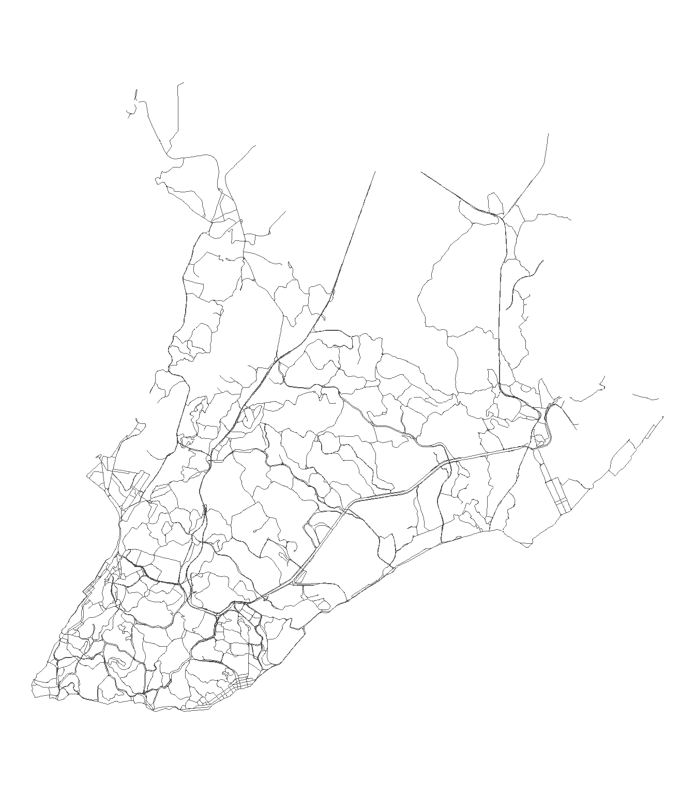
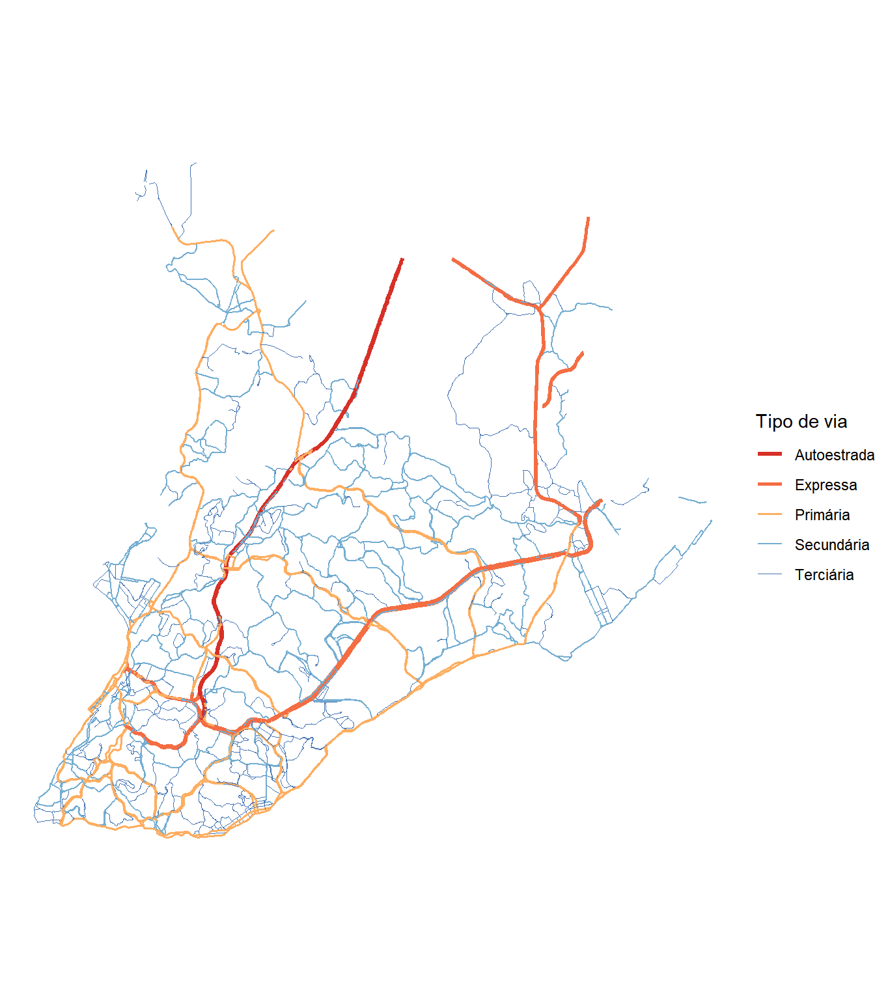
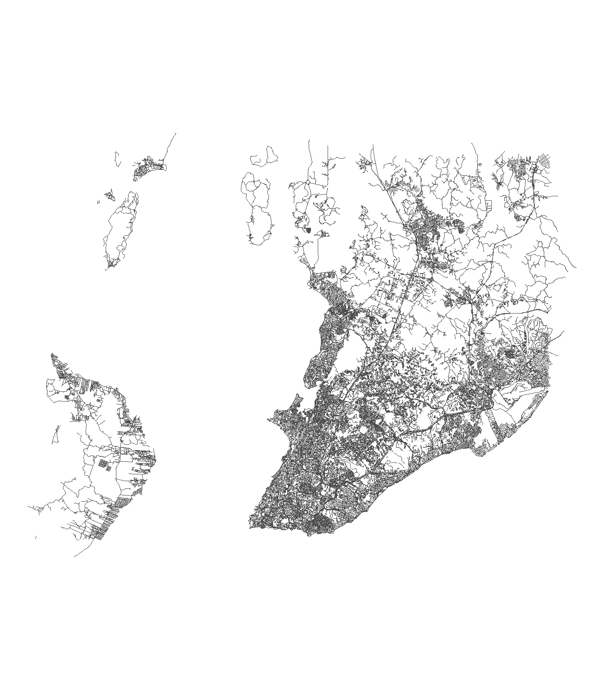
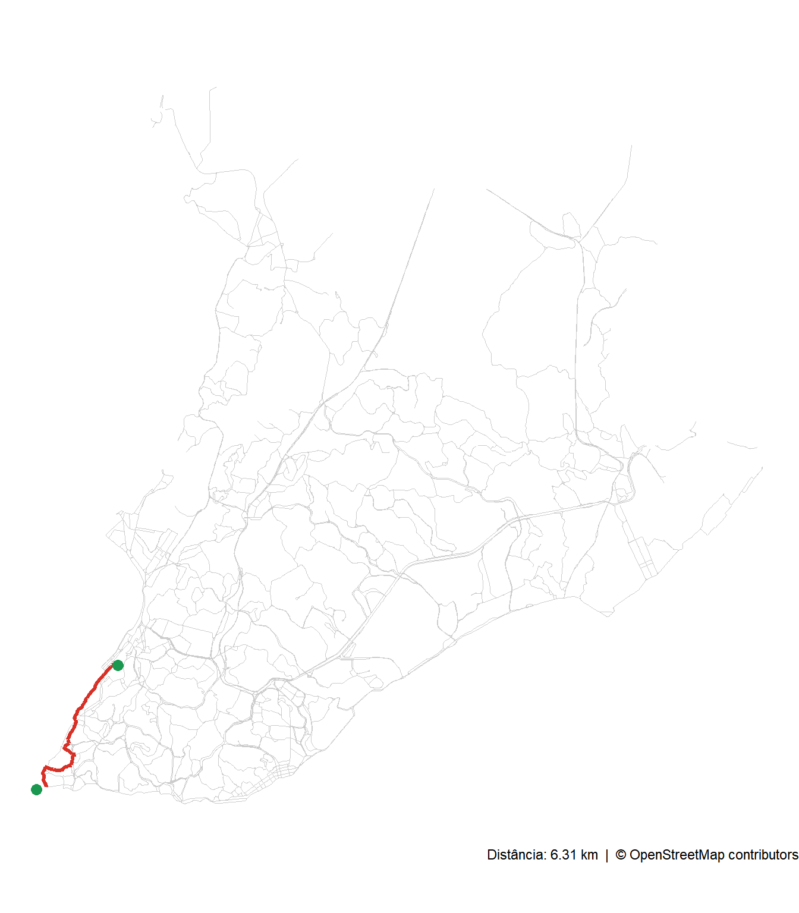

A análise de mobilidade urbana depende, em grande medida, da capacidade de representar e processar redes viárias de forma computacional. Em primeiro lugar, precisamos saber onde as ruas estão, o que implica na necessidade de obter arquivos geográficos adequados sobre estes elementos. Entendendo sua distribuição espacial, podemos então compreender como as ruas se conectam e quais caminhos permitem. Consequentemente, podemos resolver problemas importantes como computar rotas entre origens e destinos, dimensionar áreas de cobertura de equipamentos públicos e calcular índices de acessibilidade.
Ao contrário das bases institucionais exploradas nos capítulos anteriores, não é comum que órgãos institucionais oficiais disponibilizem dados de rede viária urbana. Apesar de o Departamento Nacional de Infraestrutura de Transportes (DNIT) publicar dados sobre o sistema nacional de viação na sua plataforma VGeo, por exemplo, estes compreendem somente a infraestrutura de transporte regional (não urbana).
Essa lacuna sobre dados viários no espaço urbano foi preenchida, na prática, por um projeto colaborativo que tornou-se a maior base de dados geoespaciais aberta do mundo nas últimas duas décadas: o OpenStreetMap (OSM). Neste capítulo, vamos explorar aspectos conceituais e práticos sobre informações geográficas voluntárias, explorar a estrutura de dados do OSM e seu funcionamento do OpenStreetMap e mostrar como extrair, visualizar e analisar redes viárias desta base em R.
16.1 Informações Geográficas Voluntárias
A ascensão da Web 2.0, no início dos anos 2000, transformou usuários de internet em produtores de conteúdo. Blogs, wikis e redes sociais demonstraram que comunidades distribuídas podiam criar e manter acervos de informação com qualidade e escala consideráveis. No campo geoespacial, esse fenômeno ganhou um nome preciso em 2007, quando o geógrafo Michael Goodchild cunhou o termo Volunteered Geographic Information (VGI), traduzido para o português como Informação Geográfica Voluntária (IGV). Em seu artigo seminal Citizens as sensors: the world of volunteered geography(Goodchild, 2007), ele descreveu a explosão de plataformas em que cidadãos comuns passaram a mapear, etiquetar e compartilhar lugares, rotas e territórios de forma colaborativa e aberta.
A IGV contrasta com o paradigma tradicional de produção de dados geográficos, centrado em órgãos especializados, com processos rigorosos de coleta, validação e publicação. Enquanto bases institucionais levam meses ou anos para ser atualizadas, plataformas de IGV podem incorporar uma nova rua ou um equipamento recém-construído em poucas horas. Isso não significa que a IGV seja necessariamente superior às bases institucionais. Em muitos casos, ela ocupa um papel complementar, especialmente em contextos em que a velocidade e a granularidade local são mais importantes do que a exatidão cartográfica formal.
O OpenStreetMap é a maior e mais influente plataforma de IGV, e será o foco deste capítulo. Outras plataformas também merecem menção. O Wikimapia, lançado em maio de 2006, foi uma das primeiras iniciativas a combinar mapeamento colaborativo com conteúdo enciclopédico, permitindo que usuários delineassem polígonos sobre mapas e os descrevessem em mais de cem idiomas. Embora ainda esteja acessível, o Wikimapia perdeu relevância progressivamente após 2012, à medida que o OSM consolidou sua posição como referência global.
Além dessas plataformas especializadas, grandes empresas de tecnologia também aceitam contribuições de usuários para enriquecer seus serviços de mapeamento. O Google Maps permite que usuários sugiram edições e adicionem novos estabelecimentos por meio do programa Local Guides. Já o Yandex Maps, da empresa russa Yandex, exerce papel análogo na Rússia e em países da antiga União Soviética, com um editor colaborativo que permite sugerir correções e adicionar informações ao mapa.
Uma das vantagens mais frequentemente citadas da IGV é a capacidade de mapear rapidamente áreas ou fenômenos que bases institucionais não cobrem com a mesma velocidade. Após catástrofes naturais, por exemplo, comunidades de mapeamento como o Humanitarian OpenStreetMap Team (HOT) mobilizam voluntários para atualizar mapas de regiões afetadas em tempo quase real, apoiando operações de resposta a emergências. No contexto urbano cotidiano, o OSM frequentemente apresenta maior detalhamento de vias locais, ciclovias, calçadas e estabelecimentos do que produtos cartográficos oficiais.
A IGV apresenta, ao mesmo tempo, limitações importantes que devem ser consideradas em qualquer análise rigorosa. A cobertura e a qualidade dos dados são geograficamente heterogêneas. Em geral, cidades grandes e capitais tendem a ser bem mapeadas, enquanto municípios menores e áreas rurais podem ter cobertura incompleta ou desatualizada. A ausência de um processo formal de validação também significa que erros podem persistir por longos períodos, especialmente em regiões com poucos colaboradores ativos. Por essas razões, é sempre recomendável verificar a cobertura local antes de usar dados do OSM em análises que demandem completude ou precisão cartográfica.
16.2 O OpenStreetMap
O OpenStreetMap foi fundado em 2004 por Steve Coast, então estudante da University College London. A motivação inicial era prática, já que os mapas digitais disponíveis à época eram caros, restritos por direitos autorais ou imprecisos. Por isso, Coast quis criar uma alternativa aberta que qualquer pessoa pudesse usar e melhorar. Sua primeira contribuição, em dezembro de 2004, foi o rastreamento GPS de caminhos no Regent’s Park, em Londres. O projeto cresceu rapidamente, atraindo uma comunidade global de mapeadores que contribuíam com trajetórias GPS, imagens de satélite e conhecimento local.
O funcionamento do OSM é descentralizado e baseado em consenso comunitário. Qualquer pessoa pode criar uma conta e começar a contribuir, seja editando diretamente pelo navegador com o editor iD, seja usando ferramentas mais avançadas como o JOSM. As contribuições seguem um código de conduta que privilegia a precisão geográfica e o mapeamento do que existe de fato, não do que deveria existir. A comunidade mantém uma Wiki detalhada com as convenções de mapeamento para centenas de tipos de objetos geográficos, desde rodovias e edifícios até hidrantes e caixas de correio.
A escala do OSM hoje é impressionante. O projeto conta com aproximadamente 10 milhões de usuários registrados, dos quais cerca de 2,25 milhões contribuíram ativamente com dados de mapeamento até 2025 (OpenStreetMap Wiki, 2025b). Essa base de contribuidores cobre praticamente todos os países do mundo. No Brasil, a comunidade OSM é ativa e inclui parcerias com instituições públicas, a exemplo da Prefeitura de Fortaleza, que importou oficialmente edificações e endereços ao projeto, e o Instituto de Pesquisa e Estratégia Econômica do Ceará (IPECE), que colabora com a comunidade regional (OpenStreetMap Wiki, 2025a).
Esse nível de adoção institucional evidencia que o OSM deixou de ser apenas um projeto de entusiastas para se tornar infraestrutura de dados relevante para planejamento e gestão públicos. É por isso que neste capítulo fazemos uma exceção ao termo Institucional do título deste livro, e nos dedicamos a um tipo de base não institucional, mas bastante relevante e utilizada em análises técnicas, trabalhos científicos, projetos de planejamento urbano e aplicações governamentais.
16.3 Estrutura de Dados do OSM
Para usar os dados do OSM de forma eficiente, é preciso compreender como eles são organizados internamente. O OSM representa o mundo por meio de três tipos primitivos de elementos geográficos.
Os nós (nodes) são pontos georreferenciados, definidos por um par de coordenadas geográficas (latitude e longitude). Um nó pode representar um objeto isolado, como um semáforo, uma lixeira ou uma parada de ônibus, ou pode ser apenas um ponto de passagem que integra uma via mais complexa.
As vias (ways) são sequências ordenadas de nós que formam linhas ou polígonos. Uma via aberta, com nós de início e fim distintos, tipicamente representa um trecho de rua, uma trilha, uma linha de trem ou um rio. Uma via fechada, cujo nó final coincide com o inicial, representa um polígono e pode descrever o contorno de um parque, a planta de um edifício ou o limite de uma lagoa.
As relações (relations) são agrupamentos de nós, vias e outras relações, cada um com um papel (role) definido. Relações são usadas para representar estruturas que não podem ser descritas por um único elemento, como a rota completa de uma linha de metrô (composta de vários trechos de via), os limites de um município (formados por vários segmentos de fronteira) ou um edifício com pátio interno.
O significado de qualquer elemento, seja um nó, uma via ou uma relação, é definido por tags, pares de chave e valor (no formato key=value) que descrevem suas características. Uma rua pode ter a tag highway=residential, um restaurante pode ter amenity=restaurant e um rio pode ter waterway=river. A mesma lógica se aplica a atributos complementares, como name=Avenida Sete de Setembro, lanes=4 (4 faixas) ou oneway=yes (sentido único). A Wiki do OSM documenta as tags aceitas para cada tipo de objeto, e a adesão a essas convenções é o que garante a consistência dos dados produzidos por milhões de colaboradores ao redor do mundo. Com a estrutura do OSM em mente, podemos passar à extração dos dados em R.
16.4 Obtendo Rede Viária do OSM
O pacote osmdata(Padgham et al., 2017) permite acessar os dados do OSM diretamente do R, sem necessidade de baixar arquivos de tamanho global. Ele faz isso por meio da API Overpass, um servidor de consultas especializado que disponibiliza os dados do OSM de forma filtrada. Em vez de receber o planeta inteiro, o usuário especifica uma área geográfica e os tipos de dados que deseja, e a Overpass devolve apenas o subconjunto relevante.
NotaLimitações da API Overpass e alternativas
A API Overpass é um serviço público gratuito, mas opera com um sistema de cotas por endereço IP: cada IP dispõe de um número fixo de slots de consulta simultâneos. Cada requisição ocupa um slot durante toda a sua execução mais um período de cooldown que varia com a carga do servidor. Quanto mais sobrecarregado o servidor, maior o tempo de espera antes que o slot fique disponível novamente. Quando todos os slots estão em uso, novas requisições retornam erro de timeout ou HTTP 429.
Uma solução imediata é redirecionar as consultas para um servidor espelho com set_overpass_url(), executada uma única vez antes das consultas:
A lista atualizada de instâncias públicas está em https://wiki.openstreetmap.org/wiki/Overpass_API#Public_Overpass_API_instances.
Para quem precisa de mais robustez, duas alternativas eliminam a dependência da Overpass por completo. O pacote osmextract baixa extratos PBF pré-compilados de provedores como Geofabrik (512 zonas geográficas, atualização diária), BBBike (238 cidades) e OpenStreetMap.fr (1.190 zonas), sem limites de API. Para Salvador, o extrato correspondente pelo Geofabrik seria o da região Nordeste (~378 MB), que depois pode ser recortado ao município de interesse. O pacote r5r, desenvolvido pelo IPEA para análises de acessibilidade, oferece a função street_network_to_sf(), que extrai a rede viária em formato sf a partir de uma rede roteável construída com build_network(), a partir de um arquivo .pbf de entrada que pode ser obtido pelos mesmos provedores citados acima.
16.4.1 Explorando as features disponíveis
A primeira função útil do pacote é available_features(), que retorna um vetor com todas as chaves (keys) de tags reconhecidas pelo OSM. O objetivo é dar ao usuário uma visão geral do que pode ser consultado.
O código abaixo carrega o pacote e exibe as primeiras cinquenta chaves disponíveis:
Limitamos para as cinquenta primeiras, pois a lista é extensa, com centenas de chaves. o OSM mapeia aeroportos, edificações, estabelecimentos comerciais, barreiras, ciclovias, fronteiras administrativas, iluminação pública, vegetação e muito mais. Vias de circulação são apenas uma das categorias disponíveis. Para este capítulo, o interesse recai sobre a chave highway, que engloba todos os tipos de vias terrestres, desde autoestradas até trilhas.
Para ver todas as tags associadas a uma chave específica, usa-se available_tags()1. A chamada abaixo retorna os tipos de vias reconhecidos pelo OSM, que também podem ser consultados pela Wiki do OSM.
available_tags("highway")
O resultado mostra uma hierarquia que reflete a importância funcional de cada tipo. No topo, motorway designa rodovias de acesso controlado, sem cruzamentos em nível, equivalentes às rodovias federais duplicadas do Brasil, similar ao conceito de autoestrada. Na sequência, trunk cobre vias de importância regional de alta capacidade, e primary, secondary e tertiary descrevem respectivamente as redes principal, secundária e terciária de rodovias e vias urbanas. Na base da hierarquia, residential cobre a imensa maioria das ruas de bairros.
16.4.2 Definindo a área de estudo
Toda consulta à API Overpass precisa de uma área de interesse, definida por uma caixa delimitadora (bounding box). A função getbb() recupera automaticamente as coordenadas de um lugar pelo nome, consultando o serviço de geocodificação Nominatim.
O código a seguir obtém a caixa delimitadora de Salvador, estado da Bahia. O resultado é uma matriz com as coordenadas mínimas e máximas de longitude e latitude:
bb_ssa <-getbb("Salvador Brazil")bb_ssa
min max
x -38.69943 -38.30341
y -13.01739 -12.73356
NotaUsando limites do geobr como caixa delimitadora
Pode ser que o nome do lugar não garanta uma boa correspondência via Nominatim. Deste modo, você pode delimitar a consulta pela bounding box de um município obtido com o geobr:
library(geobr)library(sf)salvador_mun <-read_municipality(code_muni =2927408, year =2022,showProgress =FALSE)bb_geobr <-st_bbox(salvador_mun)bb_geobr
16.4.3 Construindo e executando a consulta Overpass
Com a caixa delimitadora em mãos, o próximo passo é construir a consulta. A função opq() cria um objeto de consulta Overpass. O argumento timeout define, em segundos, o limite de espera pela resposta do servidor. Valores maiores são necessários para áreas extensas ou consultas complexas.
O objeto criado ainda não contém nenhum filtro de tipo de dado. Para especificar o que queremos extrair, usamos add_osm_feature(), que adiciona um filtro por chave e valor. Quando passamos um vetor de valores, a função recupera todos os elementos que tenham qualquer um deles, o que equivale a uma condição “OU” lógica.
Com a consulta filtrada, osmdata_sf() a envia ao servidor Overpass e converte a resposta para objetos do pacote sf. O resultado é armazenado abaixo e inspecionado conforme o código abaixo:
ssa_streets <-osmdata_sf(query_hw)ssa_streets
O objeto retornado é uma lista da classe osmdata. Inspecionando sua estrutura, encontramos os seguintes componentes: $bbox armazena as coordenadas da área consultada; $overpass_call registra a consulta enviada ao servidor; $osm_points contém os nós (interseções viárias) extraídos como geometrias de ponto; $osm_lines contém as vias abertas como geometrias de linha; e $osm_polygons, $osm_multilines e $osm_multipolygons armazenam, respectivamente, polígonos e geometrias compostas. Para redes viárias, o componente de interesse é quase sempre $osm_lines.
Na prática, é comum encadear todas essas etapas em um único pipeline com o operador |>. A versão abaixo produz o mesmo resultado que os três passos anteriores2:
A versão com pipeline é mais concisa e será usada de agora em diante, mas é importante conhecer os objetos intermediários para entender o que cada função realiza.
16.4.4 Mapeando a rede viária de Salvador
O componente $osm_lines do objeto ssa_streets é um objeto sf com uma linha para cada trecho de via. Entre as colunas disponíveis, a coluna highway registra o tipo de cada via, exatamente as tags que filtramos na consulta. Antes de prosseguirmos, lembre-se que as vias obtidas na operação anterior são as contidas no bounding box do município, não as vias somente do município. Isso acaba gerando vias além daquelas que existem na região de estudo. Deste modo, é possível antes fazer uma filtragem com base no polígono de Salvador para trabalharmos somente com eles de agora em diante em um objeto ssa_vias:
A partir do código abaixo, podemos ver que se trata de uma base de dados de linhas de tamanho razoável com mais de 5 mil linhas representando vias e pouco mais de cem colunas com propriedades a respeito destas vias:
nrow(ssa_vias)
[1] 5187
ncol(ssa_vias)
[1] 119
Selecionando algumas colunas mais interessantes, podemos, inclusive, observar seus primeiros resultados. Propositalmente, vamos selecionar algumas das mais relevantes, como o identificador único das linhas do OSM (osmid), além do nome da via que aquela linha representa (name), a quantidade de faixas (lanes) e a velocidade máxima permitida (maxspeed):
Figura 16.1: Rede viária de Salvador com vias de hierarquia primária e acima, extraídas do OpenStreetMap.

Um mapa mais informativo pode utilzar, por exemplo, a coluna highway para variar a espessura e a cor das linhas conforme a hierarquia viária. Vias de maior importância aparecem mais espessas e em cores de destaque, enquanto vias locais ficam mais sutis.
O código abaixo define a ordem hierárquica como uma variável factor antes de passar os dados ao ggplot2, garantindo que scale_linewidth_manual() e scale_color_manual() apliquem os valores visuais na ordem correta:
Figura 16.2: Hierarquia viária de Salvador segundo o OpenStreetMap. A espessura e a cor de cada segmento correspondem ao tipo de via.

O mapa revela a estrutura viária de Salvador com clareza, com as vias primárias formam os eixos estruturantes da cidade, enquanto as terciárias distribuem o tráfego internamente nos bairros. As autoestradas e expressas, em vermelho (BR324) e laranja (Av. Luís Viana Filho, Av. Mário Leal Ferreira e a Via Expressa Baía de Todos os Santos), correspondem às rodovias de acesso controlado que cortam o tecido urbano.
NotaObtendo toda a rede viária
Observe que solicitamos explicitamente baixar somente certos tipos de via na Overpass, ocultando todas as demais da cidade. Podemos obter todas as vias simplesmente omitindo o argumento value em add_osm_feature(), fazendo com que a consulta retorne todos os elementos que possuem a chave highway, independentemente do valor3:
Figura 16.3: Rede viária completa da caixa delimitadora de Salvador extraída do OpenStreetMap, sem filtro de hierarquia.

Vale atenção ao volume de dados retornado. Sem filtro de valor, a consulta pode ser significativamente maior e mais demorada, especialmente em cidades extensas. O risco de ultrapassar os limites de tempo e memória da API Overpass é maior nessa situação.
16.4.5 Outras camadas do OSM
A mesma lógica de consulta se aplica a outras chaves de features. A keyrailway cobre todo o sistema ferroviário, incluindo trens de subúrbio, metrô e bondes. As tags mais relevantes para contextos urbanos são subway (metrô), light_rail (veículo leve sobre trilhos) e tram (bonde). A tag rail cobre ferrovias de carga e passageiros de longa distância e, por se estender além dos limites municipais, é mais adequada para análises regionais ou interestaduais do que para o recorte de uma cidade. É possível consultar a lista completa com available_tags("railway") ou consultar a Wiki específica da chave railway OSM.
available_tags("railway")
Em Salvador, extraímos as linhas de metrô com o valor subway para a chave railway:
Até aqui, trabalhamos com a rede viária como um conjunto de linhas geográficas, onde cada trecho de rua é uma feição LINESTRING com atributos, e podemos visualizá-las e filtrá-las com as ferramentas habituais do sf. Esse tipo de representação é suficiente para mapas e análises descritivas, mas não captura algo fundamental sobre as vias urbanas: a forma como elas se conectam.
16.5.1 Grafos e redes geoespaciais
Em teoria dos grafos, uma rede é formada por dois elementos básicos: um conjunto de nós (nodes) e um conjunto de arestas (edges), em que cada aresta conecta um par de nós. Matematicamente, a notação de um grafo qualquer \(G\) é dado pela junção destes dois conjuntos de nós e arestas, \(N\) e \(A\), tal que \(G=(N,A)\), conforme a Figura 16.5. Em uma rede viária, as interseções entre ruas são os nós e os trechos de rua entre duas interseções consecutivas são as arestas. Essa estrutura de dados, simples na sua definição, abre uma classe de análises impossíveis de realizar apenas com geometrias de linha.
Figura 16.5: Representação visual e matemática de um grafo
O algoritmo que orienta os aplicativos de navegação opera, por exemplo, sobre uma representação em grafo da rede viária. Dado um ponto de origem e um destino, o algoritmo percorre o grafo buscando o caminho de menor custo, considerando distâncias, velocidades e restrições de circulação. Outros indicadores derivados da teoria dos grafos, como medidas de centralidade, permitem identificar quais trechos de via são mais críticos para a conectividade da rede, informação valiosa para o planejamento de intervenções viárias e para a avaliação de vulnerabilidades em situações de bloqueio ou desastre.
A diferença entre um arquivo de linhas e uma rede em grafo pode ser ilustrada com uma analogia simples. Um mapa em papel mostra as ruas desenhadas, mas não diz nada sobre como você passa de uma rua para outra. Um grafo faz exatamente isso ao codificar não apenas onde cada via está, mas com quais outras vias ela se conecta, em que pontos e em que sentidos.
16.5.2 Pré-processamento e limpeza da rede
Converter um conjunto de linhas geográficas em um grafo topológico raramente é uma operação imediata. Os dados brutos do OSM, assim como os de outras fontes, frequentemente apresentam inconsistências que comprometem a integridade da rede. Podem existir trechos desconectados que deveriam se tocar, nós intermediários desnecessários que fragmentam arestas contínuas e interseções complexas representadas por vários nós quando um único seria suficiente. O pacote sfnetworks(van der Meer et al., 2024) oferece um conjunto de funções de pré-processamento que tratam essas situações, cada uma voltada a um tipo específico de problema.
Um primeiro problema frequente é a precisão excessiva de coordenadas. Quando dois trechos de via deveriam se conectar, mas seus extremos diferem por uma fração mínima de grau, os pontos não coincidem matematicamente e o algoritmo os trata como nós distintos, gerando uma rede fragmentada. A solução é reduzir a precisão das coordenadas antes da conversão, de modo que pontos próximos passem a ocupar posições idênticas e sejam fundidos em um único nó.
Depois da precisão, é comum encontrar redes com arestas múltiplas, situação em que dois nós são conectados por mais de uma aresta. Isso ocorre quando diferentes colaboradores mapearam o mesmo trecho de via com atributos distintos, ou quando uma rua de mão dupla foi representada por dois segmentos sobrepostos. Podem existir também loops, arestas cujo nó de origem e de destino são o mesmo, geralmente resultado de erros de digitalização. A função to_spatial_simple() remove essas redundâncias, produzindo um grafo simples sem arestas múltiplas nem loops.
Outro problema comum é a ausência de conectividade em pontos de cruzamento. Imagine que dois trechos de via se cruzam geograficamente, mas nenhum deles foi digitalizado com um vértice exatamente no ponto de intersecção. O grafo resultante terá as duas arestas se sobrepondo visualmente, sem que exista um nó conectando-as. A função to_spatial_subdivision() detecta esses casos, em que um ponto interior de uma aresta coincide com um ponto interior ou extremidade de outra, e subdivide as arestas afetadas, inserindo os nós de conexão necessários. O resultado é uma rede em que toda intersecção geográfica corresponde a uma conexão topológica real.
Em outros casos, pode haver nós de uma rede que não configuram interseção real. Um pseudo-nó é um nó com apenas duas arestas incidentes, sem bifurcação ou mudança relevante de atributo. Isso acontece quando uma via contínua foi dividida em múltiplos segmentos por razões de mapeamento, como uma mudança de nome de rua que não implica descontinuidade física. Esses nós intermediários aumentam o tamanho do grafo sem acrescentar informação estrutural. A função to_spatial_smooth() os detecta e os remove, fundindo as duas arestas incidentes em uma única com geometria concatenada. É possível proteger determinados nós da remoção, como paradas de transporte público que coincidem com vértices da rede viária.
Por fim, interseções complexas como rotatórias e cruzamentos amplos são frequentemente representadas no OSM por um conjunto de nós próximos em vez de um único ponto. Para análises em escala de cidade, essa granularidade pode ser desnecessária. A função to_spatial_contracted() agrupa nós geograficamente próximos, usando critérios de distância máxima ou algoritmos de clusterização. Ao final, são substituídos por um único nó representativo, reposicionando as arestas incidentes de acordo.
Essas operações podem ser aplicadas isoladamente ou em sequência, conforme as características dos dados e os requisitos da análise. Um fluxo típico de preparação combina, nessa ordem, a redução de precisão, a simplificação, a subdivisão, a suavização e a contração, produzindo uma rede topologicamente consistente e pronta para algoritmos de roteamento e análise espacial.
16.5.3 Convertendo para sfnetwork
A função central do pacote é as_sfnetwork(), que recebe um objeto sf de linhas e o converte em uma rede geoespacial. O argumento directed = FALSE indica que o tráfego pode fluir em qualquer sentido pelas arestas, simplificação adequada para uma análise introdutória.
O código abaixo cria a rede a partir das vias extraídas de Salvador. Como as ruas residenciais e locais não foram incluídas na consulta original, a rede representa a malha de vias de hierarquia superior da cidade.
Ao inspecionar o objeto, vemos que ele contém duas tabelas: uma de nós, com geometrias POINT para cada interseção, e uma de arestas, com geometrias LINESTRING para cada trecho de via. A função activate() permite alternar o foco das operações entre nós e arestas.
Para análises de caminho mínimo, é preciso definir um peso para cada aresta. O peso mais natural para redes viárias é o comprimento geométrico de cada trecho, calculado pela função edge_length():
Com a rede construída e os pesos definidos, é possível calcular o caminho mais curto entre qualquer par de pontos da cidade. O algoritmo de Dijkstra, implementado na função st_network_paths(), percorre o grafo identificando a sequência de arestas de menor custo acumulado entre a origem e o destino.
Para conectar pontos geográficos arbitrários à rede, primeiro identificamos os nós mais próximos a cada localização de interesse com st_nearest_feature(). O exemplo a seguir define dois pontos de referência conhecidos em Salvador: o Pelourinho, no Centro Histórico, e o Farol da Barra, na entrada da Baía de Todos-os-Santos.
# Pontos de origem e destinopelourinho <-st_sfc(st_point(c(-38.5094, -12.9714)), crs =4326)farol_barra <-st_sfc(st_point(c(-38.5354, -13.0098)), crs =4326)# Pontos como sf para plotagem posteriorpontos_ref <-st_sf(local =c("Pelourinho", "Farol da Barra"),geometry =c(pelourinho, farol_barra))# Nós da redenos <- net_salvador |>activate("nodes") |>st_as_sf()# Nós mais próximos a cada pontono_origem <-st_nearest_feature(pelourinho, nos)no_destino <-st_nearest_feature(farol_barra, nos)
Com os índices dos nós identificados, calculamos o caminho e extraímos as arestas que o compõem para visualização:
Figura 16.6: Caminho mais curto na rede viária de Salvador entre o Pelourinho e o Farol da Barra, calculado pelo algoritmo de Dijkstra com base em dados do OpenStreetMap.

O mapa mostra o trajeto calculado em vermelho sobre a rede completa em cinza. A análise, que levou frações de segundo, é o mesmo tipo de cálculo que fundamenta aplicativos de navegação. A diferença está na escala e na incorporação de velocidades reais e restrições de circulação que sistemas comerciais adicionam à rede básica. Com os conceitos e ferramentas apresentados neste capítulo, você está preparado para construir análises de acessibilidade, tempo de deslocamento e cobertura espacial sobre qualquer rede viária extraída do OpenStreetMap.
16.6 Exercícios
Rede viária de Feira de Santana. Extraia a rede viária de Feira de Santana (BA) usando osmdata, incluindo as categorias motorway, trunk, primary, secondary e tertiary. Produza um mapa com espessura de linha proporcional à hierarquia viária e compare visualmente a estrutura da rede com a de Salvador.
Caminho mais curto em outra cidade. Escolha dois pontos de referência reconhecíveis em uma cidade brasileira (pode ser a mesma cidade do exercício anterior ou outra). Construa a rede viária com sfnetworks, calcule o caminho mais curto entre os dois pontos e visualize o trajeto sobre o mapa da rede.
Comparação de extensão viária. Usando dados do OSM, calcule e compare o comprimento total (em quilômetros) de vias primary, secondary e tertiary em dois municípios de portes muito diferentes, como uma capital e um município de pequeno porte. O que as diferenças revelam sobre a estrutura das redes viárias nos dois contextos?